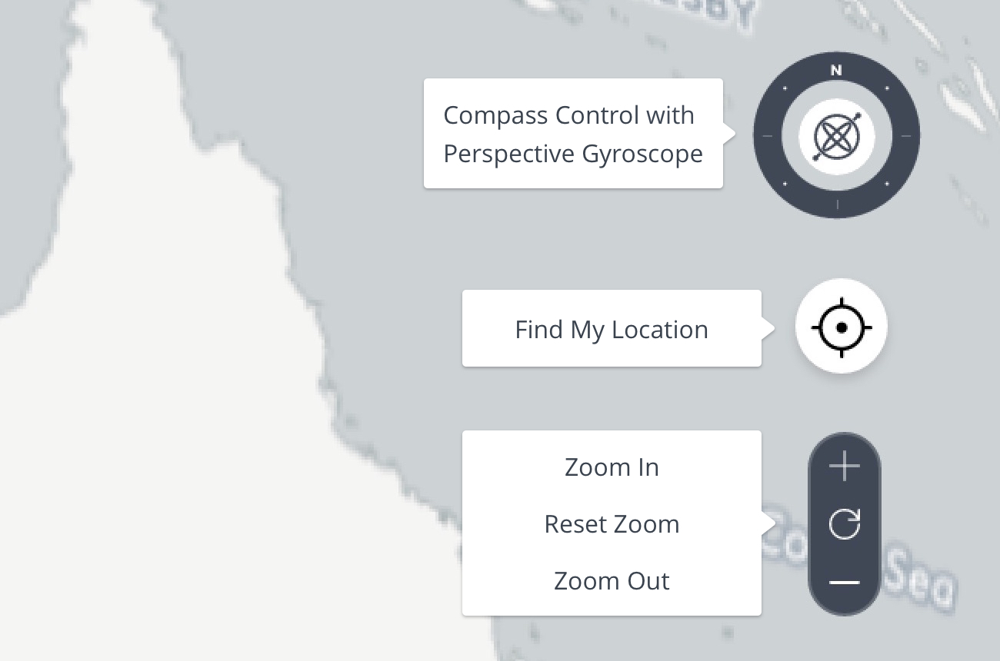
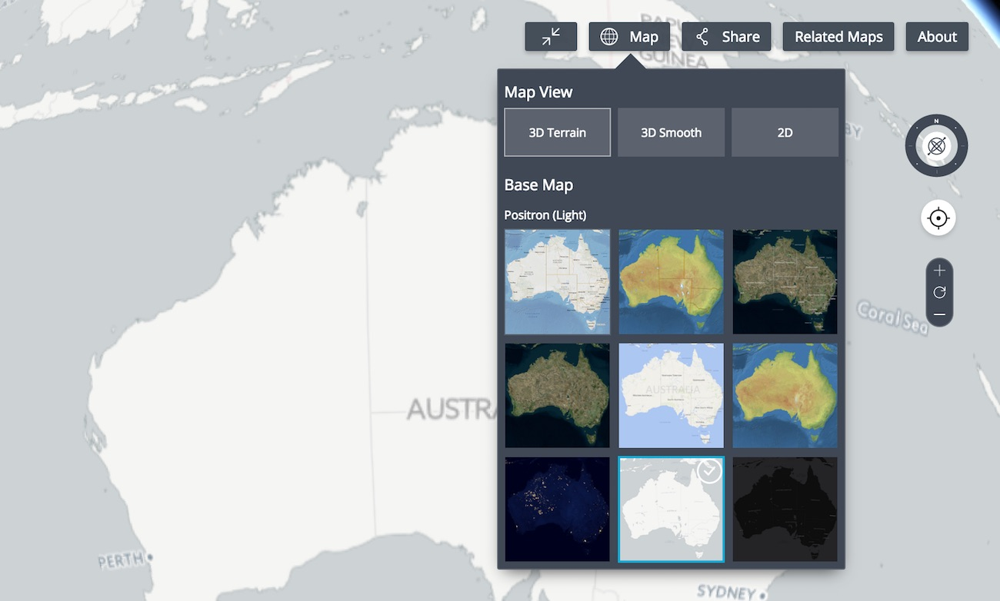

There are multiple ways to navigate NationalMap's map view. Use whichever method you prefer.
Hint: Mouse over the Compass Control (pictured below) to see help on its use.
Move your mouse pointer over the map and use the scroll wheel to zoom in or out. The location at the centre of the map display is the centre of the zooming.
Right-click and drag upwards or downwards over the map to zoom about the centre point (dragging left or right has no effect).
Click on the zoom control (pictured above) to zoom in or out quickly by a set amount.
Click anywhere on the map and drag it to the required location.
Click the reset icon in the center of the zoom control (pictured above).
(Note that pressing the F5 key on Windows or Command + R on Mac OS will reload the entire NationalMap web page. This will result in a reset which will show the whole of Australia, but it also results in the total loss of all your context information from the current session, which includes display information and selected Data Sets. It is not recommended unless you are experiencing problems.)
Use the Compass Control (pictured above) to rotate the map so North is no longer at the top. Click on the “gyroscope” in the centre of the Compass Control and drag slowly to the left or right to rotate the map clockwise or anti-clockwise respectively. The further you drag, the faster it rotates. Release the mouse button when you reach the desired rotation.
Click on the North Point or outer ring of the Compass Control (pictured above) and drag it around to set the desired rotation directly.
Control + left-click and drag left or right over the map to rotate the view about the centre (on Windows systems you can also use Middle-click and drag).
Click on the “gyroscope” in the centre of the Compass Control (picture above) and drag slowly upwards to tilt the view into a Perspective View. Drag downwards to tilt the view back to vertical. The further you drag, the faster it tilts. Release the mouse button when you reach the desired view.
Control + left-click and drag upwards or downwards over the map to enter or adjust the perspective view. (On Windows systems you can also use Middle-click + drag.)
When you are in Perspective View, Control + left-click and drag left or right over the map to “orbit” around the centre of the view. You can also click and drag left or right over the “gyroscope” at the centre of the Compass Control to orbit about the centre of the view.
Double-click the “gyroscope” in the centre of the Compass Control to return the view quickly to a vertical view with North to the top at the current location and scale.
Dragging to Pan and using the Mouse Wheel to zoom still work while showing a Perspective View.
Even the topography and road maps can be viewed in perspective.
You can’t simulate looking from under the ground because the system always keeps the “camera position” above the earth’s surface, but you can create a view which is looking only at the sky. Tilt back downwards to recover.
Hint: In Australia, Cradle Mountain and Katoomba are good places to use for experimenting with Perspective View. Use the search bar to locate them. (Other very high relief areas like the Grand Canyon or Mount Everest - not the ones in NSW - are also really cool!)
Click on the Maps button to show the Base Map Dialog (pictured below) for changing the base map.
Close the dialog by clicking the X at the top right or clicking again on the Base Maps button.